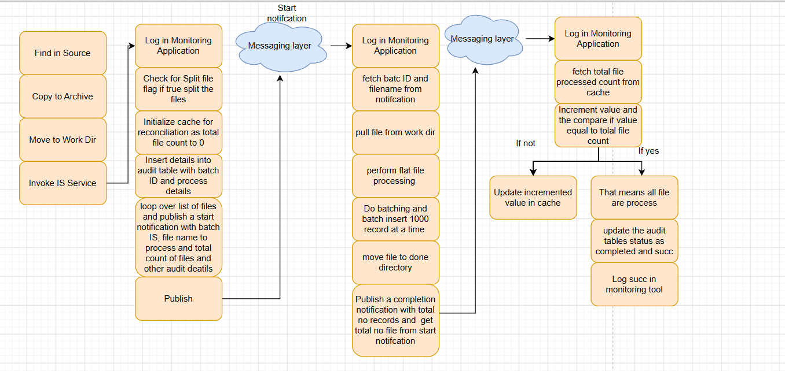

Abhishek Rao
Integration Engineer | Scalable Systems | API Design
Integration Engineer with 5+ years of experience designing enterprise-scale integrations.
Currently leading a team of 5 developers and delivering high-performance solutions.
Case Study: Scalable File Processing
Problem
Large file processing with audit requirements would overload Integration Server
if handled sequentially.
Solution
Designed an event-driven architecture using file splitting,
asynchronous messaging, and parallel processing.
Architecture Flow
1️⃣ MFT picks file → Work Directory
2️⃣ Initial Service
• Insert START in audit table
• Split file into chunks
• Initialize cache
• Publish start notifications
3️⃣ Messaging Layer (Async)
4️⃣ Parallel Processing
• Process files in parallel
• Load into Snowflake
• Publish completion events
5️⃣ Reconciliation Service
• Increment processed count
• Compare with total file count
6️⃣ Final Step
• Update audit table as COMPLETED
• Log success
Architecture Diagram
High-level system design:

Highlights
- Delivered 40+ integrations
- Built reusable framework (~40% effort reduction)
- Leading team of 5 developers
Skills
webMethods
Integration Server
REST
SOAP
Java
JMS
XML
JSON
Contact
Email: your.email@gmail.com
LinkedIn: linkedin.com/in/yourprofile